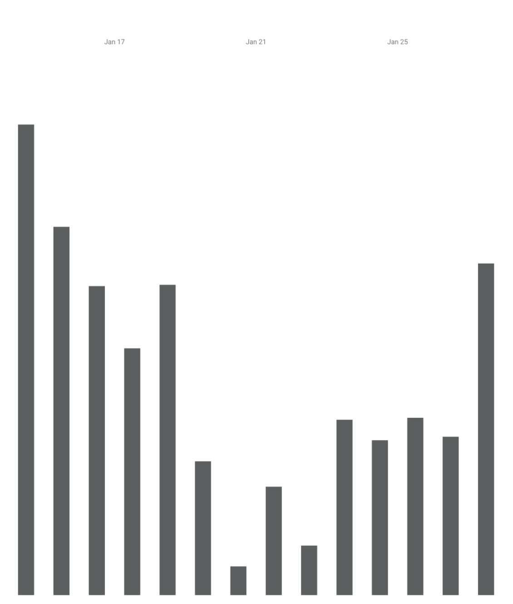
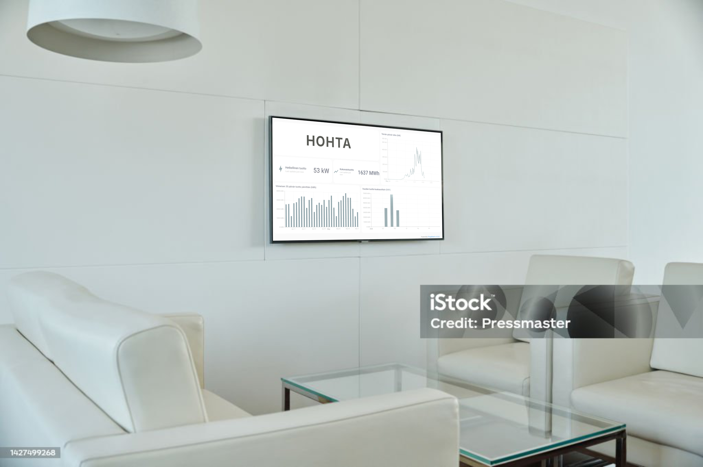

Pikku
34 €/kk
Kevyt infonäyttö- ja perusseurantapaketti pieniin kohteisiin.
Hohta soveltuu hyvin yrityksille. Hohtan monitorointilaitetta ei tarvitse kytkeä yrityksen sisäverkkoon, mikä säästää pitkän hyväksyntäprosessin IT-osaston kanssa. Sen sijaan monitorointilaitteella on oma mobiili-internet-yhteytensä. Voimme myös räätälöidä infonäytön ulkoasun sopimaan yrityksenne brändikuvaan. Logot, värit, esitettävät luvut, tai täysin custom-käyttöliittymä, kaikki valittavissa. Tutustu lisää Hohtan ominaisuuksiin täällä tai varaa esittelyaika.
Kyllä sopii. Meillä on mahdollisuus tuotantodatan tallentamiseen, esimerkiksi GRESB-raporttia varten. Tarjolla on myös yksinkertaisia infonäyttöjä, jotka minimoivat kustannukset. Hohta on mahdollista asentaa kohteisiin, joissa on jo rakennusautomaatiojärjestelmä, kuten Fidelix. Hohta toimii myös kohteissa, joissa ei vielä ole rakennusautomaatiojärjestelmää. Kohteissa, joissa rakennusautomaatiojärjestelmä on jo kytketty aurinkopaneeleihin, yhteensopivuus ja tarvittavat toimenpiteet varmistetaan tapauskohtaisesti. Tutustu lisää Hohtan ominaisuuksiin täällä tai varaa esittelyaika.
Kyllä sopii. Onko kohteellanne uniikki tarina? Voimme yhdessä räätälöidä infotaululla aurinkodatan ohella näytettävät kuvat, grafiikat ja viestit. Itse informaation kustomointimahdollisuudet ovat myös suuret. Miltä kuulostaisi kesäkuukausina auringontuoton vertaaminen kohteen kokonaiskulutukseen, tai tietyn osan kulutukseen? Tutustu lisää Hohtan ominaisuuksiin täällä tai varaa esittelyaika.
Voimme muokata nykyisiä käyttöliittymiämme tavoitteisiinne sopivaksi kuvien, värien ja logojen suhteen, tai tehdä mittatilaustyönä juuri teidän tarpeisiinne sopivan käyttöliittymän. Voimme seurata ja tarvittaessa yhdistää useampien kohteiden tuotantodataa, tallentaa sitä ja luoda siitä raportteja. Sovellumme myös isoihin kohteisiin, joissa mitataan useita inverttereitä. Tutustu lisää Hohtan ominaisuuksiin täällä tai varaa esittelyaika.
Jokainen kohteen ja asiakkaan tarpeet ovat yksilolliset, joten suosittelemme varaamaan esittelyajan. Paasette tutustumaan Hohtan tarjottaviin ominaisuuksiin ja me paasemme tutustumaan kohteenne vaatimuksiin. Naiden pohjalta voimme laatia teille tarjouksen, joka kattaa tarpeenne, mutta ei sisalla teille tarpeettomia ominaisuuksia.
Paikalle kutsuttavat huollot ovat aina kalliita molemmille osapuolille, niin rahassa, tyytyväisyydessä, kuin ajassa. Haluamme minimoida rikkoontumisen riskit aktiivisesti kehittämällä ja ylläpitämällä digitaalista infrastruktuuriamme, pitämällä laitteiden tietoturvan ajantasalla, ja varmistamalla luotettavan etäyhteyden palvelimiimme. Edellämainituista ylläpidosta koituu juoksevia kustannuksia, minkä takia tarjoamme Hohtan liittymänä.
Kyllä sopii. Hohta on nimenomaan suunniteltu tällaisiin tilanteisiin. Tarjoamme mobiiliyhteyden, jonka ansiosta sisäverkkoon kytkeytyminen ei ole lainkaan tarpeellista. Infonäytössänne tulee olla verkkoyhteys ja kykeneväisyys näyttämään verkkosivumme.
Valitse teille sopiva taso. Alla on runsaasti tilaa ominaisuuksille ja vertailulle, jotta pakettien erot on helppo nähdä.
34 €/kk
Kevyt infonäyttö- ja perusseurantapaketti pieniin kohteisiin.
Suosituin
55 €/kk
Laajempi monitorointipaketti, jossa on vaihtoehto elegantille näkymälle, hälytykset ja pidempi historia.
Ota yhteyttä myyntiin
Asiakaskohtaisesti räätälöitävä paketti tarpeisiin, joita vakiopaketit eivät kata.
| Ominaisuus | Pikku | Perus | Räätälöity |
|---|---|---|---|
| Yksinkertainen näkymä | ✓ | ✓ | Sovittavissa |
| Perusnäkymä | ✓ | ✓ | Sovittavissa |
| Elegantti näkymä | ✓ | ✓ | Sovittavissa |
| Kustomoitu näkymä | - | - | Sovittavissa |
| Custom brändäys | - | - | Sovittavissa |
| Historiadata | 12kk | 24kk | Sovittavissa |
| Invertterikohtainen monitorointi | - | ✓ | Sovittavissa |
| Sähköpostihälytykset virhetiloista | - | ✓ | Sovittavissa |
| Sähköpostihälytykset tiedonkeruun katkoksista | - | - | Sovittavissa |
| Raportit tai lisäpalvelut | - | Erillistyönä | Sovittavissa |
| Sitovat vasteajat tai SLA | - | - | Sovittavissa |
| Paikan päällä tehtävät toimet | Erillisveloitus | Erillisveloitus | Sovittavissa |

